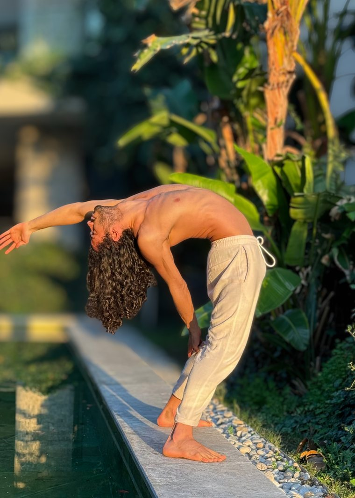

Grup DersleriGroup Classes
Hatha temelli, her seviyeye açık dersler. Nefes, duruş ve farkındalık üzerine kurulu, sakin akan bir pratik.Hatha-based classes open to all levels. A calm practice built on breath, posture and awareness.
Yoga & Hareket · İstanbulYoga & Movement · Istanbul
Nefes, beden ve ses. Grup ve özel yoga dersleri, hareket çalışmaları ve ders sonunda kanunla dinlenme.Breath, body and sound. Group and private yoga classes and movement work, closing with a rest to live qanun.

YaklaşımApproach
Baran yoga ve hareket eğitmeni. Derslerinde hatha yoganın sade temelini serbest hareket çalışmalarıyla birleştiriyor.
Baran is a yoga and movement teacher. His classes combine the simple foundations of hatha yoga with free movement work.
Müzisyen olduğu için sesi pratiğin bir parçası olarak ele alıyor. Derslerin sonunda, dinlenme anında kanun çalarak pratiği sesle kapatıyor.
As a musician he treats sound as part of the practice. At the end of class, during the final rest, he closes the practice by playing the qanun.
Dersler her seviyeye açık. Beden ne kadar alan veriyorsa o kadar ilerleriz.
Classes are open to all levels. We go as far as the body allows that day.
DerslerClasses
Hatha temelli, her seviyeye açık dersler. Nefes, duruş ve farkındalık üzerine kurulu, sakin akan bir pratik.Hatha-based classes open to all levels. A calm practice built on breath, posture and awareness.
Kişinin bedenine, temposuna ve ihtiyacına göre birlikte kurulan bir pratik. Evde, stüdyoda ya da çevrimiçi.A practice shaped together around your body, pace and needs. At home, in the studio or online.
İnziva ve festival programlarında sabah pratikleri ve yoga oturumları. Ders, istenirse kanunla bir dinlenmeyle kapanır.Morning practice and yoga sessions within retreat and festival programmes. On request, the class closes with a rest to live qanun.
NeredeWhere
Diğer çalışmalarOther work
Kanun, makam müziği ve elektronik prodüksiyon. Konser, festival ve seremoni setleri.Qanun, makam music and electronic production. Concert, festival and ceremony sets.
Sayfaya git →Visit page →Uzanarak dinlenen canlı bir ses deneyimi: kanun, gong ve kâseler.A live sound experience you receive lying down: qanun, gong and bowls.
Sayfaya git →Visit page →Kuşaklar boyunca aktarılana, söylenemeyene ve yarım kalan vedalara birlikte, şefkatle bakarız.Together and with compassion, we look at what was passed down through generations, what could not be said and the farewells left unfinished.
Sayfaya git →Visit page →Sıcak suda, desteklenerek yapılan birebir bir çalışma.A one-to-one session in warm water, held and supported.
Sayfaya git →Visit page →İletişimContact
Konser, ders, atölye, inziva ve seremoni davetleri için yaz. Türkçe ve İngilizce.For concerts, classes, workshops, retreats and ceremonies. Turkish and English.
baran.eskili@gmail.com